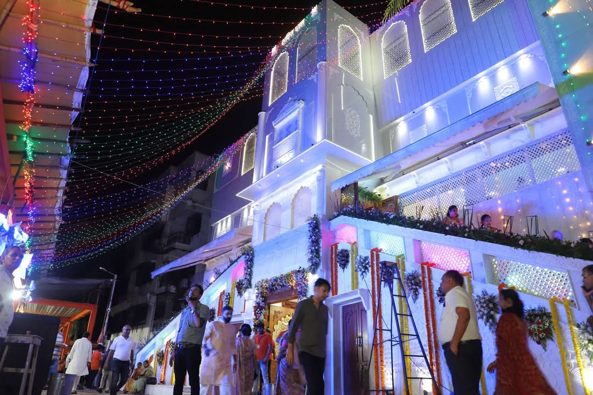
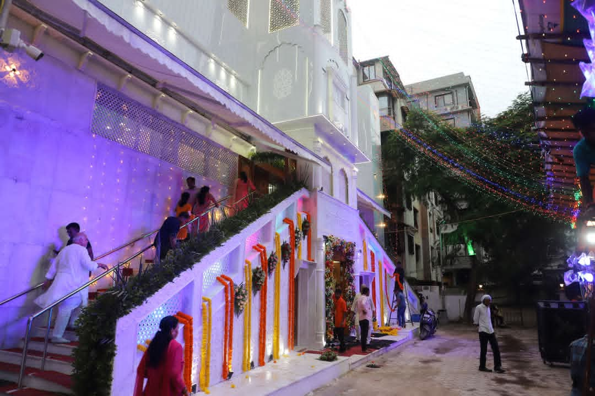

समर्पण, भक्ति और सेवा के प्रतीक इस मंदिर ने वर्षों से श्रद्धालुओं को आध्यात्मिक ऊर्जा और सांस्कृतिक एकता का संदेश दिया है।

श्री राणी सती दादीजी मंदिर सूरत की निर्माण यात्रा एक प्रेरणादायक गाथा है। इसकी शुरुआत एक साधारण सी जगह से हुई थी जहाँ कुछ भक्त मिलकर कीर्तन और पूजा करते थे। प्रारंभिक दिनों में मंदिर की कोई स्थायी संरचना नहीं थी।
